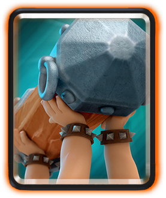

I am glad to meet heavy dec players cuz it requires high cost and when it is under attack, it is hard to defend effectively with the high cost cards. In order to spend Elixer efficiently, it is prefered to use low cost cards. For example i can defend 7cost Meganight with 3cost Goblines by luring it to the center of my base which means i earn 4costs.!
The Battle Ram card is unlocked from Builder's Workshop (Arena 6). It is a single-target, melee troop with both moderate hitpoints and damage. It targets buildings over other units. Like a Prince or Dark Prince, it will begin to charge towards its target after traveling some distance, and deals double damage if it hits its target whilst charging. Once the Battle Ram has hit a target or loses all its hitpoints, it will break and reveal the two Barbarians underneath. A Battle Ram card costs 4 Elixir to deploy.
